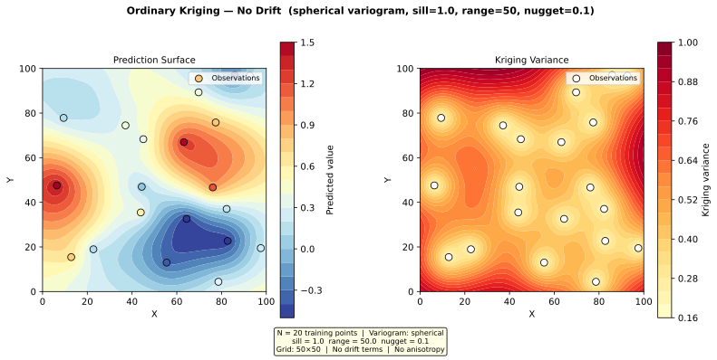

Example 4.1 — Ordinary Kriging (No Drift)¶
Script: docs/examples/ex_ordinary_kriging.py
Output: docs/examples/output/ex_ordinary_kriging.svg
{kind=link}
Overview¶
This example demonstrates the simplest use case of the UK_SSPA v2 kriging pipeline: ordinary kriging with no drift terms and no anisotropy.
Ordinary kriging assumes the mean of the field is unknown but constant. It is the appropriate choice when there is no systematic spatial trend in the data (no regional gradient, no river influence). The kriging system solves for both the weights and the unknown mean simultaneously via the unbiasedness constraint.
Setup¶
| Parameter | Value |
|---|---|
| Training points | 20 (synthetic, seed=42) |
| Variogram model | Spherical |
| Sill | 1.0 |
| Range | 50 (same units as coordinates) |
| Nugget | 0.1 |
| Drift terms | None |
| Anisotropy | Disabled |
| Prediction grid | 50 × 50 (2 500 nodes) |
| Coordinate domain | [0, 100] × [0, 100] |
Minimal config.json equivalent¶
{
"variogram": {
"model": "spherical",
"sill": 1.0,
"range": 50,
"nugget": 0.1
},
"drift_terms": {},
"grid": {
"x_min": 0,
"x_max": 100,
"y_min": 0,
"y_max": 100,
"resolution": 2
}
}
No anisotropy block is needed. No data_sources.linesink_river block is needed.
How It Works¶
Step 1 — Generate synthetic training data¶
The 20 training points are drawn from a spatially correlated random field whose covariance structure matches the specified spherical variogram. This is done via Cholesky decomposition of the covariance matrix:
C[i,j] = spherical_cov(dist[i,j], sill=1.0, range_=50, nugget=0.1)
L = np.linalg.cholesky(C)
z = L @ np.random.standard_normal(N)
Step 2 — Build the ordinary kriging model¶
build_uk_model() is called with drift_matrix=None. When no
drift matrix is provided (or an empty N×0 matrix is passed), the function omits the
drift_terms keyword from the PyKrige constructor entirely, producing an ordinary
kriging model:
uk_model = build_uk_model(
x_train, y_train, z_train,
drift_matrix=None, # ordinary kriging — no drift
variogram=vario
)
The log message confirms: Building OrdinaryKriging (no specified drift terms provided).
Step 3 — Predict on a 50×50 grid¶
Grid nodes are generated with np.meshgrid and predictions are obtained by calling
uk_model.execute("points", x_grid, y_grid) directly. This returns:
z_pred— the kriging estimate at each grid nodez_var— the kriging variance (uncertainty) at each grid node
Kriging variance is zero at observation locations (exact interpolation when nugget = 0) and increases with distance from observations, reaching the sill value in areas far from any data.
Note: With nugget = 0.1, the variance at observation locations equals the nugget (not zero), because the nugget represents micro-scale variability or measurement error.
Output¶
The script saves a two-panel SVG figure:

| Panel | Description |
|---|---|
| Left — Prediction Surface | Filled contour map of the kriging estimate. Observation points are overlaid, coloured by their measured value. |
| Right — Kriging Variance | Filled contour map of the kriging variance. Low variance (yellow) near observations; high variance (red) in data-sparse areas. |
Key Observations¶
-
Exact interpolation tendency: The prediction surface passes close to each observation value. The small nugget (0.1) allows slight smoothing at data locations.
-
Variance pattern reflects data density: Variance is lowest near clusters of observations and highest in corners and edges of the domain where data are sparse. The maximum variance approaches the sill (1.0) in the most data-sparse regions.
-
No trend removal: Because no drift terms are specified, the kriging estimate represents the raw spatial interpolation. If the data had a systematic gradient (e.g., water levels declining from north to south), ordinary kriging would still interpolate correctly but would not extrapolate the trend beyond the data extent.
When to Use Ordinary Kriging¶
Use ordinary kriging (no drift) when:
- The spatial field has no systematic trend within the study area
- You have sufficient data coverage that the mean can be estimated locally
- You want the simplest, most robust interpolation
Use Universal Kriging with drift terms (Tasks 4.2–4.3) when:
- There is a known regional gradient (e.g., hydraulic head declining in one direction)
- Rivers or other features create a systematic influence on the field
- The data extent is large relative to the variogram range
API Reference¶
| Function | Module | Purpose |
|---|---|---|
build_uk_model() |
kriging.py |
Constructs PyKrige UniversalKriging model |
uk_model.execute() |
PyKrige | Predicts at arbitrary points |
See docs/api/kriging.md for full API documentation.
See docs/theory/variogram-models.md for variogram model equations.